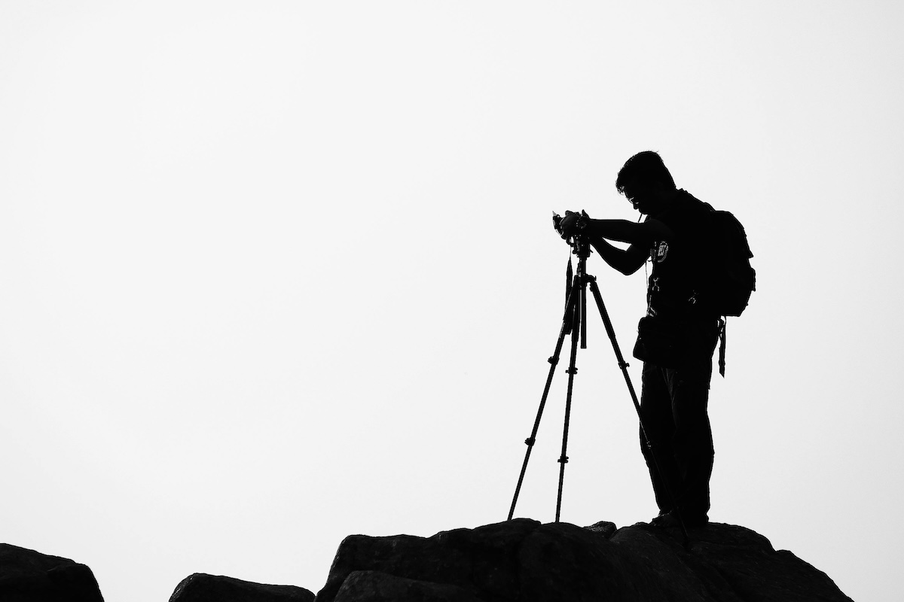

Tripod Seçim Rehberi: Hangi Malzeme, Hangi Yükseklik, Hangi Başlık?
Fotoğrafçılığın en kritik ekipmanlarından biri tripoddur. Uzun pozlamadan manzara çekimine, ürün fotoğrafçılığından videoya kadar pek çok alanda netlik ve stabilite sağlar. Ancak tripod seçimi göründüğü kadar basit değildir. Malzeme yapısı, taşıma kapasitesi, maksimum yükseklik, bacak kilitleme sistemi ve tripod başlığı gibi birçok değişken fotoğraf deneyimini doğrudan etkiler. Bu rehberde ihtiyaçlarınıza en uygun tripod modelini seçebilmeniz için tüm detayları ele alıyoruz.
Tripod Seçerken İlk Adım: Kullanım Amacını Belirlemek
Tripod seçiminde “En iyi tripod hangisidir?” sorusunun tek bir doğru cevabı yoktur. En doğru tripod, kullanım amacınıza en uygun olan modeldir.
Manzara Fotoğrafçılığı İçin
- Rüzgâra dayanıklı, güçlü gövde
- Yüksek taşıma kapasitesi
- Orta-sütun çıkarılabilir veya ters çevrilebilir yapıda olmalı
- Maksimum stabilite sağlayan kauçuk veya çivili ayak uçları
Seyahat (Travel) Fotoğrafçılığı İçin
- Hafif ve kompakt
- Katlandığında çantaya veya sırt çantasına sığacak kadar küçük
- Karbon fiber tercih edilebilir
- Bacakların içe doğru katlanabildiği modeller avantaj sağlar
Video Çekimleri İçin
- Fluid head (akışkan başlık) şarttır
- Yüksek taşıma kapasitesi
- Çok yönlü pan–tilt hareketleri
- Titreşim emici bacak yapısı
Stüdyo ve Ürün Fotoğrafçılığı İçin
- Ağırlık sorun değil, sağlamlık öncelik
- Orta sütunla birlikte hassas yükseklik ayarı
- Çok yönlü hareket kabiliyeti sunan kafa seçimi
Tripod Malzemeleri: Alüminyum mu, Karbon Fiber mi?
Tripod seçimindeki en kritik karar malzeme seçimidir. İki ana seçenek vardır: alüminyum ve karbon fiber.
Alüminyum Tripodlar
Avantajları
- Daha ekonomik
- Dayanıklı
- Mikro titreşimleri nispeten iyi emer
Dezavantajları
- Karbon fibere göre daha ağır
- Soğuk havalarda ele daha soğuk hissiyat verir
Kimler İçin Uygun?
Bütçesi kısıtlı olan, stüdyo veya yakın çevre çekimlerinde kullanacak fotoğrafçılar için ideal.
Karbon Fiber Tripodlar
Avantajları
- Çok daha hafif
- Daha yüksek titreşim sönümleme
- Seyahat ve doğa fotoğrafçılığı için en ideal malzeme
- Paslanmaya karşı daha dirençli
Dezavantajları
- Daha pahalı
Kimler İçin Uygun?
Sık seyahat eden, uzun yürüyüş yapan, ağırlığın önemli olduğu outdoor fotoğrafçılar için en iyi tercih.
Tripod Yükseklik Seçimi: Hangi Boy Daha Doğru?
Tripodun yüksekliği kullanımdaki konforu ve stabiliteyi doğrudan etkiler.
Minimum Yükseklik
- Makro fotoğrafçılık yapanlar için çok kritik
- Orta sütunun çıkarılabildiği veya ters takılabildiği tripodlar büyük avantaj sağlar
Maksimum Yükseklik
Tripod seçerken, maksimum yüksekliğin kendi boyunuza yakın olmasına dikkat etmelisiniz. Kamera gözü hizanıza geldiğinde, uzun çekimlerde eğilmek zorunda kalmazsınız.
Genel öneri: Boyunuz + kamera yüksekliği ≈ tripod maksimum yüksekliği
Katlanmış Uzunluk
Seyahat edenler için en önemli kriterlerden biri katlanmış uzunluktur.
- 30–45 cm: Üst düzey taşınabilirlik
- 45–55 cm: Standart tripod ölçüleri
Bacak Yapısı, Segment Sayısı ve Kilitleme Mekanizması
Tripodun stabilitesi büyük ölçüde bacak yapısına bağlıdır.
Segment Sayısı
Bacaklar genelde 3 veya 4 segmentlidir.
- 3 segment: Daha stabil
- 4 segment: Daha kompakt (seyahat için ideal)
Kilitleme Mekanizması
İki ana sistem vardır:
Twist-lock (çevirmeli kilit)
- Daha hızlı açılır
- Daha sessiz
- Seyahat tripodlarında çok tercih edilir
Lever-lock (mandallı kilit)
- Daha güçlü kilit hissi
- Eldivenle kullanım kolaylığı
- Profesyonel video tripodlarında sık tercih edilir
Tripod Başlık Tipleri: Ball Head mi, Fluid Head mi?
Tripod başlığı çekim tarzınızı doğrudan etkiler. Yanlış seçilen bir başlık, ne kadar iyi tripod alırsanız alın performansı düşürür.
Ball Head (Top Kafa)
Özellikleri
- Tek bir düğme ile tüm yönlerde hareket
- Kompakt ve hafif
- Fotoğrafçılık için en çok tercih edilen kafa tipi
En uygun kullanım alanları
- Manzara
- Uzun pozlama
- Seyahat fotoğrafçılığı
- Portre
Fluid Head (Video Başlığı)
Özellikleri
- Akışkan hareket
- Pan–tilt kontrolü
- Video için olmazsa olmaz
En uygun kullanım alanları
- Video çekimleri
- YouTube içerikleri
- Belgesel
3-Way Head (3 yönlü pan-tilt başlık)
Özellikleri
- Her eksen ayrı kontrol edilir
- Hassas kadrajlama imkanı
- Biraz daha büyük yapıdadır
En uygun kullanım alanları
- Ürün fotoğrafçılığı
- Mimari çekimler
- Stüdyo kullanımı
Taşıma Kapasitesi: Tripodun Kaldırabileceği Maksimum Yük
Tripod seçerken belirtilen taşıma kapasitesi önemlidir fakat her zaman gerçek kullanım değerini yansıtmayabilir.
Genel kural: Kamera ve lens toplam ağırlığınızın 2 katı taşıma kapasitesine sahip bir tripod seçin.
Örneğin:
- Kamera + lens toplam ağırlığı: 2 kg
- Önerilen tripod kapasitesi: En az 4 kg
Orta Sütun (Center Column) Kullanımı
Orta sütun, tripodun yüksekliğini artırmak için tasarlanmıştır; ancak tamamen yukarı kaldırmak stabiliteyi azaltır.
Öneri: Maksimum yükseklik ayarını orta sütuna yüklenmeden sağlayan tripodlar daha stabil ve profesyoneldir.
Ayak Uçları: Kauçuk mu, Çivili mi?
Doğa fotoğrafçıları için çivili ayak uçları büyük avantaj sağlar.
- Kauçuk ayak uçları: Kapalı mekan, düz zemin
- Çivili ayak uçları: Toprak, kar, çimen, kaygan zemin
Bazı tripodlar iki uç tipiyle birlikte gelir.
Tripod Seçimi İçin Son Öneriler
- Seyahat ediyorsanız karbon fiber tercih edin.
- Video çekiyorsanız fluid head seçmek zorunludur.
- Manzara fotoğrafçılığında stabilite ağırlıktan daha önemlidir.
- Tripodu maksimum yükseklikte değil, orta seviyelerde kullanmak en iyi performansı sağlar.
- Segment sayısı arttıkça portatiflik artar, stabilite azalır.
- Taşıma kapasitesini mutlaka göz önünde bulundurun.
Sonuç
Tripod, fotoğrafçılık ekipmanları arasında en uzun süre kullanılan ve performansı direkt etkileyen araçlardan biridir. Uygun tripod seçimi, çekimlerinizde netlik, keskinlik ve profesyonellik sağlar. Bu rehberde malzeme türleri, yükseklik seçenekleri, başlık tipleri ve mekanik detaylara kadar tripod seçiminde bilmeniz gereken tüm kriterleri ele aldık.
İhtiyaçlarınıza uygun modeli seçerek hem daha keyifli hem de daha kaliteli çekimler gerçekleştirebilirsiniz.